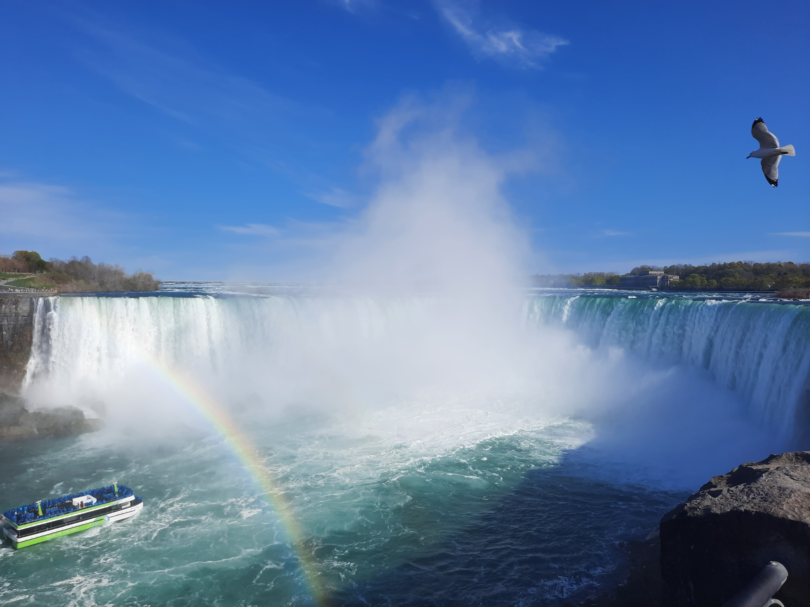
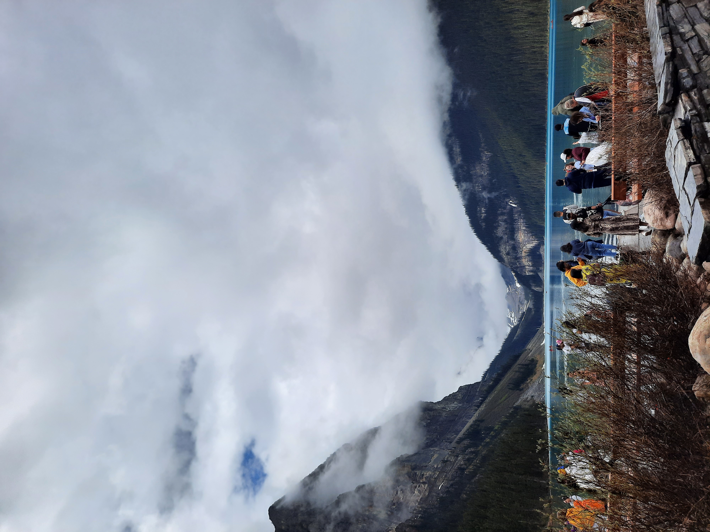
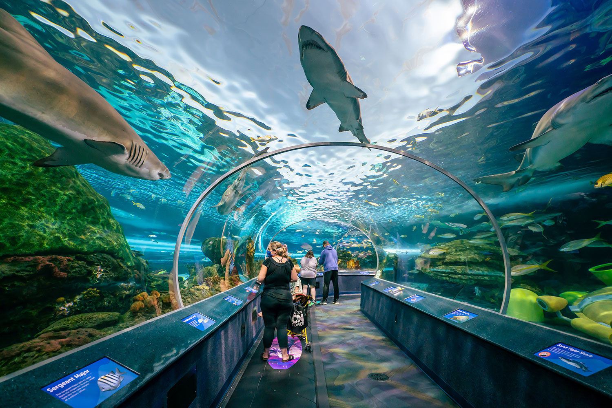
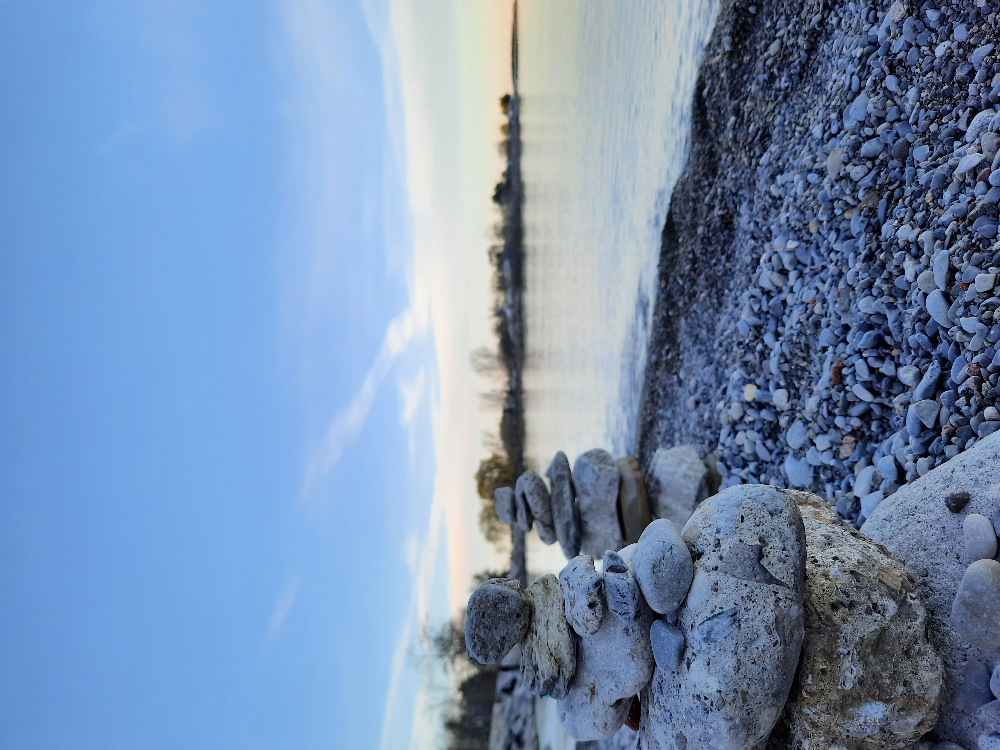

Welcome to Travel Canada
Hello, fellow adventurers! I'm Wasif Raiyan, and this is my corner of the internet where I share my love for Canada.
Canada, the second-largest country in the world, is a land of stunning landscapes, vibrant cities, and rich cultural diversity. From the majestic Rocky Mountains to the bustling streets of Toronto, every corner of this country has something unique to offer.
Join me on a virtual journey as we explore the beauty, culture, and hidden gems that Canada has to offer. Whether you're a fellow traveler, a nature enthusiast, or someone curious about life in Canada, I hope you find inspiration and information here.
Featured Blog Posts

During my visit to Niagara Falls, I was captivated by the sheer power and beauty of the falls. The mist in the air and the roar of the water were truly awe-inspiring. I highly recommend visiting this natural wonder if you ever get the chance.
Banff National Park is a pristine wilderness.

My journey through Banff was filled with stunning mountain vistas, serene lakes, and encounters with local wildlife. It's a paradise for nature lovers.
Ripley's Aquarium of Canada is a mesmerizing experience.

Exploring the underwater world at Ripley's Aquarium was like stepping into a different realm. The vibrant marine life and interactive exhibits made it a memorable experience.
Bluffers Sand Beach offers a tranquil escape.

My day at Bluffers Sand Beach was all about sun, sand, and the gentle lapping of Lake Ontario's waters. It's a perfect spot for relaxation.
Toronto Island is a hidden gem.

My day on Toronto Island was filled with scenic walks, picnics, and breathtaking views of the Toronto skyline. It's a peaceful oasis in the city.
Experience the enchanting Sakura blossoms in High Park, Toronto.

High Park's Sakura Blossom display during the spring season is a must-see. Join me in exploring the magical beauty of cherry blossoms in the heart of Toronto.